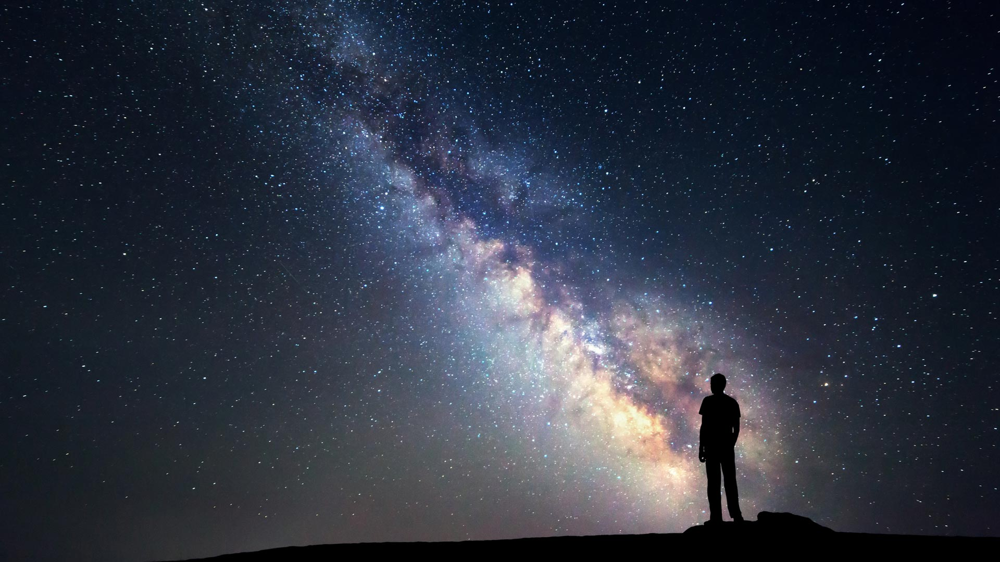

¿QUÈ ES?
El universo es la totalidad del espacio y del tiempo, de todas las formas de la materia, la energía, el impulso, las leyes y constantes físicas que las gobiernan. Sin embargo, el término también se utiliza en sentidos contextuales ligeramente diferentes y alude a conceptos como cosmos, mundo o naturaleza. Su estudio, en las mayores escalas, es el objeto de la cosmología, disciplina basada en la astronomía y la física, en la cual se describen todos los aspectos de este universo con sus fenómenos.
La ciencia modeliza el universo como un sistema cerrado que contiene energía y materia adscritas al espacio-tiempo y que se rige fundamentalmente por principios causales. Basándose en observaciones del universo observable, los físicos intentan describir el continuo espacio-tiempo en el que nos encontramos, junto con toda la materia y energía existentes en él
Los experimentos sugieren que el universo se ha regido por las mismas leyes físicas, constantes a lo largo de su extensión e historia. Es homogéneo e isotrópico. La fuerza dominante en distancias cósmicas es la gravedad, y la relatividad general es actualmente la teoría más exacta para describirla. Las otras tres fuerzas fundamentales, y las partículas en las que actúan, son descritas por el modelo estándar.
El universo tiene por lo menos tres dimensiones de espacio y una de tiempo, aunque experimentalmente no se pueden descartar dimensiones adicionales. El espacio-tiempo parece estar conectado de forma sencilla, y el espacio tiene una curvatura media muy pequeña o incluso nula, de manera que la geometría euclidiana es, como norma general, exacta en todo el universo.
El universo, ¿una ilusión?
Algunos científicos llegaron a la conclusión de que, posiblemente, el universo colapsó, hasta dejar de existir casi tan pronto cuando empezó, lo que plantea la idea de que todo lo que vemos no existe y solo es el pasado de los astros.